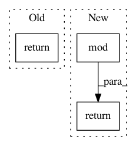

2fae7e43c29174745c2cb6a409db02d507429e5a,python/mxnet/ndarray/numpy/_op.py,,remainder,#Any#Any#Any#,1330
Before Change
out : ndarray or scalar
This is a scalar if both x1 and x2 are scalars.
return _ufunc_helper(x1, x2, _npi.mod, _np.mod, _npi.mod_scalar, _npi.rmod_scalar, out)
@set_module("mxnet.ndarray.numpy")
@wrap_np_binary_func
After Change
if isinstance(x1, numeric_types) and isinstance(x2, numeric_types):
_np.mod(x1, x2, out=out)
return _api_internal.mod(x1, x2, out)
@set_module("mxnet.ndarray.numpy")
@wrap_np_binary_func
In pattern: SUPERPATTERN
Frequency: 4
Non-data size: 3
Instances
Project Name: apache/incubator-mxnet
Commit Name: 2fae7e43c29174745c2cb6a409db02d507429e5a
Time: 2020-03-18
Author: 32725332+Alicia1529@users.noreply.github.com
File Name: python/mxnet/ndarray/numpy/_op.py
Class Name:
Method Name: remainder
Project Name: apache/incubator-mxnet
Commit Name: 2fae7e43c29174745c2cb6a409db02d507429e5a
Time: 2020-03-18
Author: 32725332+Alicia1529@users.noreply.github.com
File Name: python/mxnet/ndarray/numpy/_op.py
Class Name:
Method Name: mod
Project Name: snorkel-team/snorkel
Commit Name: 98e6a637cf96d77e9e309c1049f52387f11e8ed7
Time: 2017-09-25
Author: rogergoldman@gmail.com
File Name: snorkel/utils.py
Class Name:
Method Name: matrix_conflicts
Project Name: facebookresearch/Horizon
Commit Name: 247203f29b7e841204c76d922c1ea5b2680c3663
Time: 2020-12-08
Author: czxttkl@fb.com
File Name: reagent/models/seq2slate.py
Class Name: DecoderPyTorch
Method Name: forward